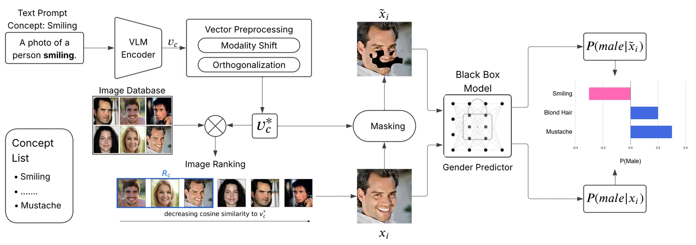
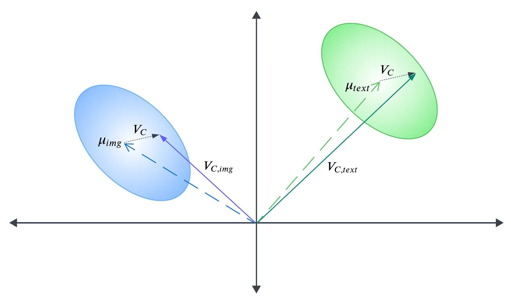
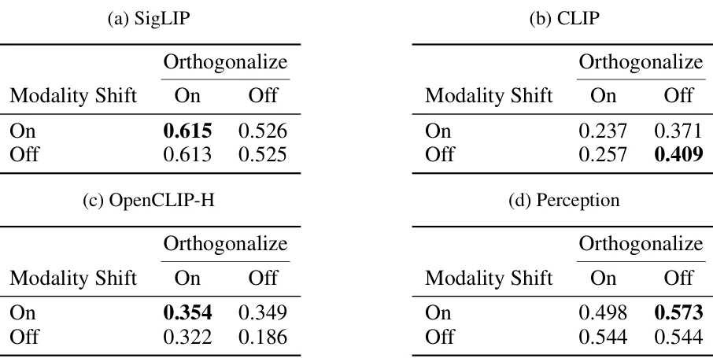
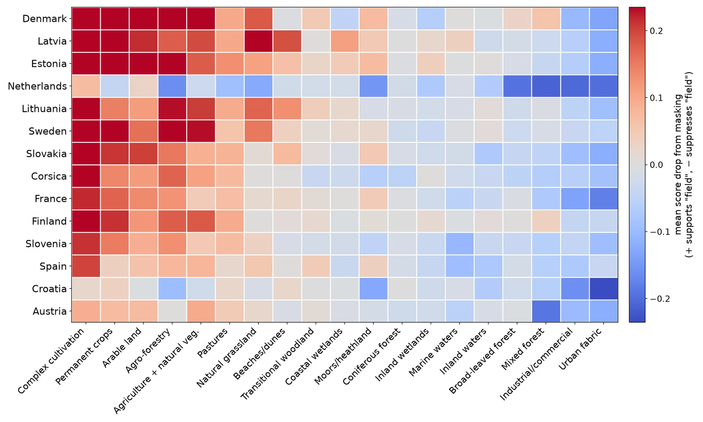

O Problema da Caixa Preta em Visão Computacional
Interpretar por que um modelo de machine learning tomou uma determinada decisão é um desafio central, especialmente em modelos de visão computacional (CV) que operam como caixas pretas. Em cenários de alto risco, como medicina ou contratação, a transparência não é apenas desejável, mas essencial. Uma abordagem popular para essa interpretabilidade é a 'atribuição baseada em conceitos'. Em vez de analisar pixels ou filtros de rede neural, essa técnica mede quanto um conceito compreensível para humanos (como 'sorrindo' ou 'cabelo longo') contribuiu para a previsão do modelo.
Considere um classificador de gênero M que prevê se uma imagem contém um homem ou uma mulher. Se o modelo atribui alta pontuação ao conceito 'sorrindo' para a classe 'homem', isso sugere que o modelo está usando esse recurso espúrio para fazer a classificação. Identificar esses vieses permite o refinamento do modelo. No entanto, para que a atribuição baseada em conceitos seja útil na prática, ela precisa atender a quatro critérios rigorosos: funcionar em modelos black-box (sem acesso aos pesos), medir tanto atribuição global quanto local, não exigir conjuntos de dados massivos anotados manualmente e ser aplicável a uma ampla gama de tarefas (não apenas classificação).
Limitações dos Métodos Existentes
Os métodos existentes falham em atender a todos esses critérios simultaneamente. O TCAV (Testative Concept Activation Vectors), uma das primeiras abordagens, requer acesso aos pesos do modelo para calcular a ativação dos conceitos, limitando-o a cenários white-box. Versões subsequentes, como ConceptSHAP e PACE, mantêm essa restrição. Por outro lado, métodos mais recentes, como os Post-hoc Concept Bottleneck Models (PCBMs), funcionam em black-boxes, mas exigem conjuntos de dados rotulados com conceitos, o que é caro e impraticável para muitas aplicações. Além disso, os PCBMs geralmente fornecem apenas atribuição global e não suportam tarefas complexas como segmentação ou geração de legendas.
Essa lacuna motiva a proposta do trabalho: o método Hide and Seek (HnS). Os autores, da Arizona State University, apresentam uma técnica que elimina a necessidade de acesso aos pesos do modelo e de dados rotulados. O HnS opera assumindo que podemos descrever um conceito em linguagem natural e que temos acesso a um modelo de visão e linguagem (VLM) para interpretar tanto o texto quanto as imagens. O objetivo é medir a causalidade entre a presença de um conceito visual e a saída do modelo alvo, de forma fiel e local.

A Metodologia Hide and Seek (HnS)
O cerne do HnS é uma estratégia de 'perturbação controlada'. Para medir a atribuição de um conceito C para uma classe Y em um modelo M, os autores comparam a probabilidade prevista por M quando o conceito está visível versus quando está oculto. O fluxo de trabalho começa com a representação textual do conceito. Usando um VLM (especificamente o SigLIP nos experimentos), o texto do conceito é convertido em um vetor de embedding. No entanto, vetores de texto e imagem ocupam espaços vetoriais distintos, deslocados de suas origens. Para corrigir isso, os autores aplicam duas pré-processamentos: 'Modality Shift' (correção de deslocamento de modalidade) e 'Ortogonalização'. A correção de deslocamento centraliza os embeddings de texto e imagem, permitindo que a similaridade cosseno seja calculada de forma justa entre eles.

Recuperação e Localização do Conceito
Com o vetor de conceito processado v*C, o próximo passo é encontrar imagens que representem esse conceito. O HnS consulta um banco de imagens (como CelebA ou COCO-Stuff) e calcula a similaridade cosseno entre v*C e os embeddings de imagem de cada foto. As K imagens mais similares (K=50 nos experimentos) formam o conjunto Rc. Essas imagens servem como amostras onde o conceito está naturalmente presente. Em seguida, o método precisa localizar onde o conceito aparece dentro de cada imagem x do conjunto Rc. O VLM divide a imagem em L patches quadrados e gera um embedding para cada um. A similaridade entre o embedding do patch e v*C indica a presença do conceito.
Mascaramento e Cálculo de Atribuição
Para identificar quais patches contêm o conceito, os autores usam um limiar dinâmico τc, definido como a média mais 1,5 vezes o desvio padrão das similaridades cosseno dos patches. Aproximadamente 7% dos patches são selecionados como contendo o conceito. Esses patches são então mascarados para criar uma versão alterada da imagem, tilde x. O mascaramento é crucial: se feito mal, pode introduzir artefatos que o modelo alvo usa para prever, enviesando a atribuição. O HnS oferece sete estratégias de preenchimento (blur, zero-fill, white-fill, etc.) e seleciona a que melhor 'esconde' o conceito, verificando a diferença vetorial entre a imagem original e a mascarada. A atribuição final é calculada como a diferença na probabilidade prevista pela classe Y entre a imagem original e a mascarada: Attr(C) = P(Y|x) - P(Y|tilde x).
Atribuição Local e Global
Uma vantagem significativa do HnS é sua capacidade de fornecer atribuição em dois níveis. A atribuição local é calculada para cada imagem individualmente, permitindo entender por que o modelo classificou uma imagem específica de determinada maneira. Isso é vital para auditorias caso a caso. A atribuição global é agregada sobre o conjunto Rc, fornecendo uma métrica de quanto o conceito influencia a classe em média. Diferente de métodos que exigem retropropagação ou acesso a camadas intermediárias, o HnS requer apenas forward-passes no modelo black-box. Isso o torna agnóstico à arquitetura do modelo alvo, podendo ser aplicado a classificadores, segmentadores ou até geradores de legendas.

Validação e Resultados
Os autores validaram o HnS em dois datasets principais: CelebA (rostos de celebridades) e COCO-Stuff (objetos e cenas). Para avaliar a fidelidade das atribuições, eles compararam os scores do HnS com 'ground-truth' de atribuição, obtidos através de métodos white-box robustos (como gradientes ou shapley values) em modelos surrogate treinados para imitar o black-box. Nos resultados, o HnS apresentou a maior correlação com o ground-truth em comparação com TCAV, ConceptSHAP e PCBMs. Isso indica que o HnS mede com precisão a dependência real do modelo em relação ao conceito, sem ser enganado por correlações espúrias ou artefatos de mascaramento.
Aplicações em Tarefas Diversas
Além da classificação, o HnS foi demonstrado em tarefas onde métodos anteriores não funcionam. Um caso de uso destacado é a segmentação de imagens de satélite. Os autores aplicaram o método para entender quais conceitos de cobertura do solo (como 'campo', 'água', 'floresta') influenciam a previsão de um modelo de segmentação de campos agrícolas. O HnS gerou mapas de calor que mostram claramente as regiões da imagem onde o modelo 'olha' para tomar sua decisão. Outro exemplo é a geração de legendas (captioning), onde o método pode explicar quais partes da imagem contribuíram para a geração de uma palavra específica na frase. Essa flexibilidade amplia drasticamente o escopo da interpretabilidade em visão computacional.

Limitações e Considerações Finais
Apesar dos avanços, o HnS não é perfeito. A precisão depende da qualidade do VLM usado para embeddings e da escolha do limiar de similaridade. Conceitos muito abstratos ou ambíguos podem levar a recuperações de imagens imprecisas, afetando a localização. Os autores sugerem que a inspeção humana do conjunto Rc pode melhorar os resultados, removendo imagens que não representam bem o conceito. Além disso, embora o HnS seja mais rápido que métodos baseados em otimização iterativa, ele ainda requer múltiplos forward-passes no modelo alvo, o que pode ser custoso em escala muito grande.
Em resumo, o Hide and Seek preenche uma lacuna importante na literatura de XAI (Explainable AI). Ao eliminar a necessidade de acesso aos pesos e dados rotulados, ele democratiza a interpretabilidade conceitual. A técnica é robusta, aplicável a black-boxes e oferece granularidade local e global. Para desenvolvedores e cientistas de dados que precisam auditar modelos de visão proprietários ou complexos, o HnS oferece uma ferramenta prática e teoricamente fundamentada para entender o que os modelos realmente estão 'vendo'.
O que fica
- HnS usa um VLM para encontrar imagens relevantes e mascaras regiões para medir o impacto no modelo.
- O método funciona em modelos black-box, sem acesso aos pesos ou arquitetura interna.
- Atribuição local (por imagem) e global (conjunto) são calculadas via diferença de probabilidade.
- Validado no CelebA e COCO-Stuff, mostrando maior correlação com ground-truth que métodos anteriores.
Paper original: Hide and Seek: HIDE Concepts to SEEK explanations for black box models
Comentários
Nenhum comentário ainda. Seja o primeiro.